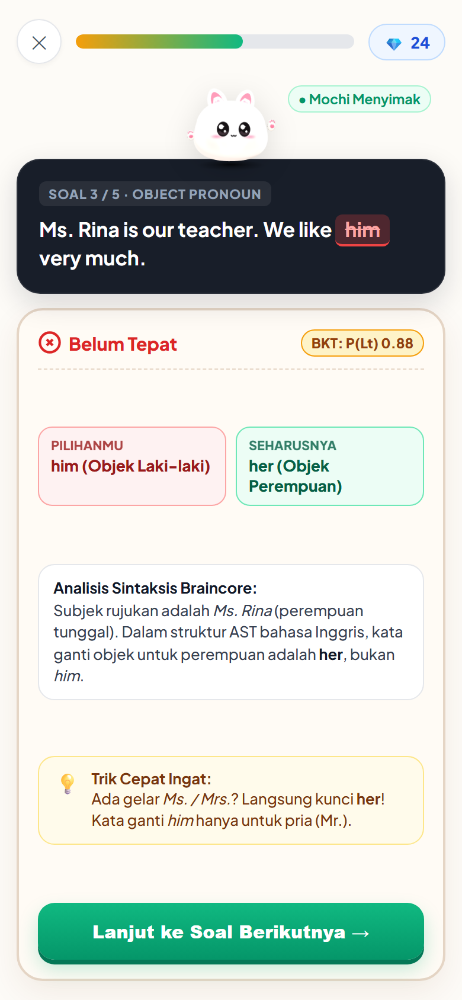

CEFR A1–C2 · 180 Lesson
Grammar Hub & Diagnosis Braincore
Pelajari pola sintaksis bahasa Inggris tanpa rumus yang bikin pusing. Dilengkapi analisis pohon kalimat (AST), telemetri BKT real-time, dan trik cepat ingat.
